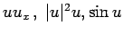

Inhalt Index DeskTop Bronstein

 Differentialgleichungen Partielle Differentialgleichungen Nichtlineare partielle Differentialgleichungen, Solitonen Physikalisch-mathematische Problemstellung
Differentialgleichungen Partielle Differentialgleichungen Nichtlineare partielle Differentialgleichungen, Solitonen Physikalisch-mathematische Problemstellung


Unter einer Evolutionsgleichung versteht man eine Gleichung, die die zeitliche Entwicklung einer physikalischen Größe beschreibt. Beispiele für lineare Evolutionsgleichungen sind die Wellengleichung, die Wärmeleitungsgleichung und die SCHRÖDINGER-Gleichung. Die Lösungen der Evolutionsgleichungen werden auch Evolutionsfunktionen genannt.
Im Unterschied zu den linearen Evolutionsgleichungen enthalten die nichtlinearen Evolutionsgleichungen (9.129), (9.130) (9.131), (9.132) und (9.133) die nichtlinearen Terme  bzw. |u|2u und ux2. Diese Gleichungen sind, ausgenommen (9.132), parameterfrei. Physikalisch betrachtet beschreiben nichtlineare Evolutionsgleichungen Strukturbildungen wie Solitonen (dispersive Strukturen und periodische Muster) sowie nichtlineare Wellen (dissipative Strukturen).